6 octobre 2026 · Même backend temporaire, mêmes données synthétiques · 1440 × 1000
La V2 conserve ses fonctionnalités natives et améliore les parcours : navigation groupée, filtres réversibles, paramètres ciblés et actions persistantes dans les dialogues. Consultez le rapport fonctionnel, l’audit des parcours et l’étude des modèles Astryx. Cliquez sur une capture pour l'ouvrir en taille réelle.
Comparer les indicateurs, les contrôles financiers et le rapprochement.
Comparer les actions disponibles pour chaque compte.
Les enveloppes restent prioritaires ; les suggestions et outils groupés suivent les budgets.
Comparer la densité, les colonnes et les actions.
Comparer les périodes, les modes, les statistiques et les courbes natives.
Comparer les contrôles de projection et la gestion des scénarios.
V1 : assistant en sept écrans. V2 : dialogue guidé en cinq étapes, création du compte sans quitter le dialogue, choix du thème en direct et actions toujours visibles. Les données de ces captures sont synthétiques.
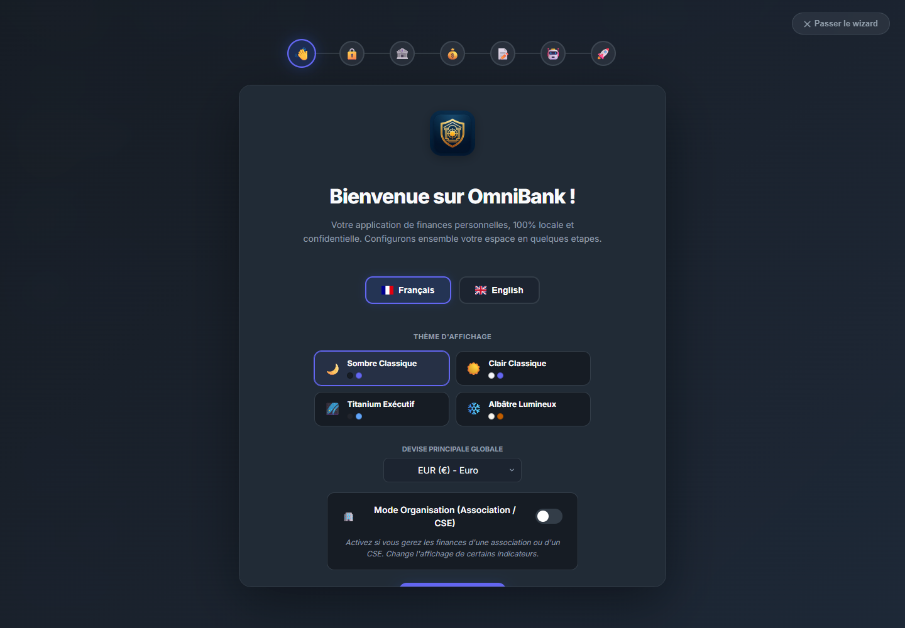
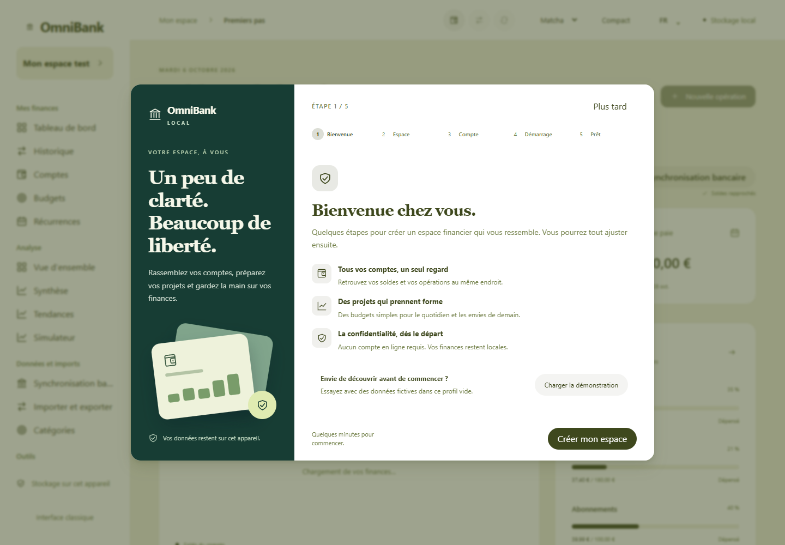
Voir le dialogue V2 sur mobile (390 × 844).
Paramètres ciblés, étapes d’import, filtres réversibles et actions persistantes. Données synthétiques uniquement.
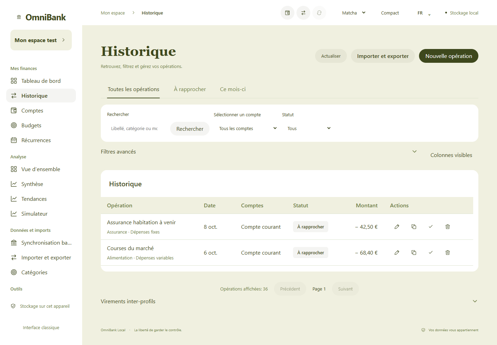
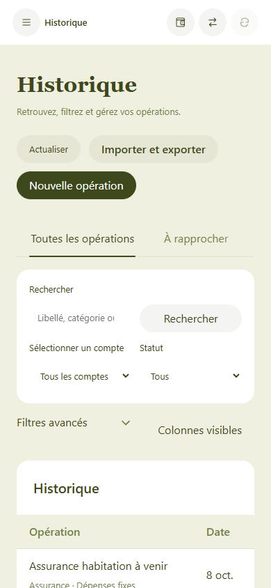
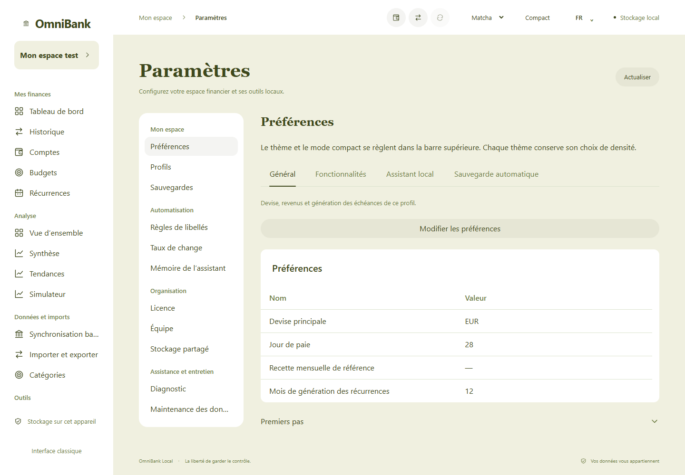
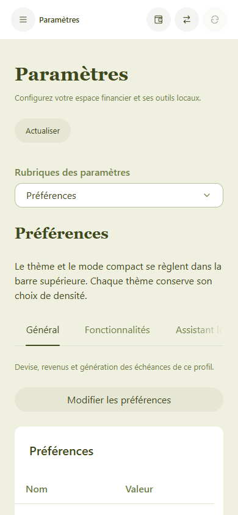
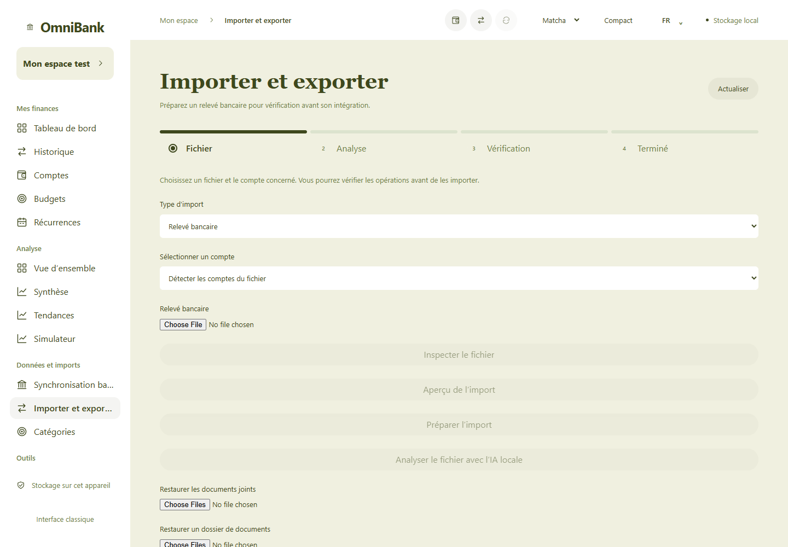
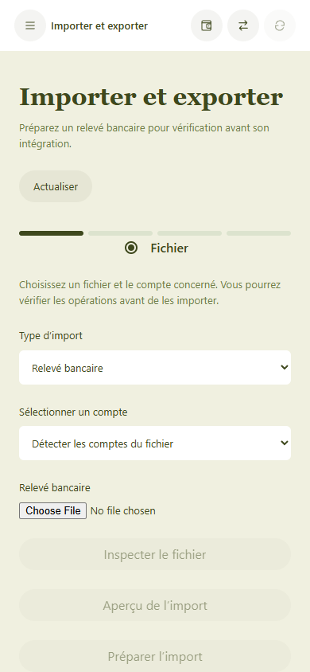
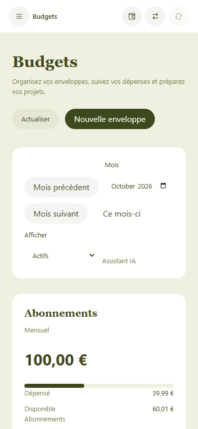
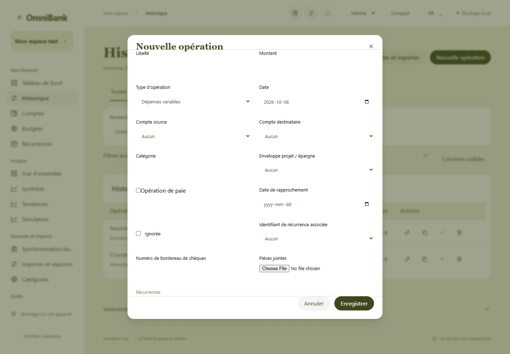
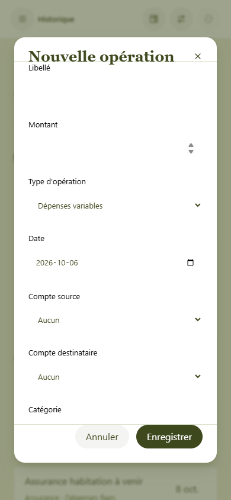
 V2 — Historique
V2 — Historique